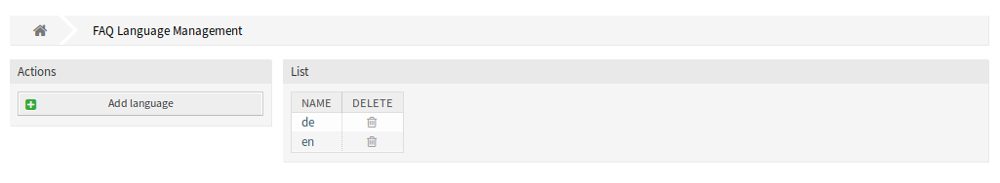
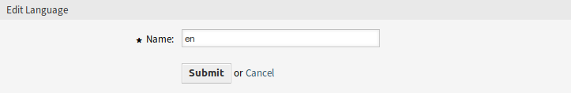
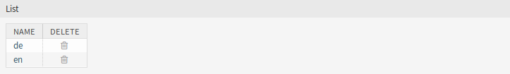

Nyelvkezelés¶
Megjegyzés
Ez a menüpont csak olyan ügyintézőknek érhető el, akiknek adminisztrátori jogosultságaik vannak.
Használja ezt a képernyőt a GyIK bejegyzésekben elérhető nyelvek kezeléséhez. Egy friss OTRS telepítés alapértelmezetten már tartalmaz néhány nyelvet. A nyelvkezelés képernyő a GyIK menü Nyelvkezelés menüpontjában érhető el.

GyIK nyelvkezelés képernyő
GyIK nyelvek kezelése¶
Egy nyelv hozzáadásához:
- Kattintson a Nyelv hozzáadása gombra a bal oldalsávban.
- Töltse ki a szükséges mezőt.
- Kattintson az Elküldés gombra.

Nyelv hozzáadása képernyő
Egy nyelv szerkesztéséhez:
- Kattintson egy nyelvre a nyelvek listájában.
- Módosítsa a mezőt.
- Kattintson az Elküldés gombra.

Nyelv szerkesztése képernyő
Egy nyelv törléséhez:
- Kattintson a kuka ikonra a nyelvek listájában.
- Kattintson az Igen gombra a megerősítő párbeszédablakban.

Nyelv törlése képernyő
GyIK nyelv beállításai¶
A következő beállítás akkor érhető el, ha hozzáadja vagy szerkeszti ezt az erőforrást. A csillaggal jelölt mezők kitöltése kötelező.
- Név *
- Egy nyelv ISO 639-1 kódja.